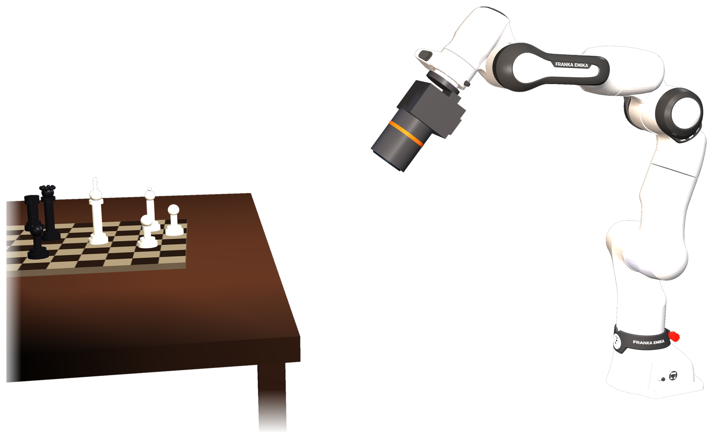
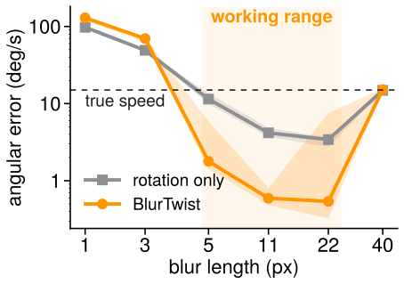
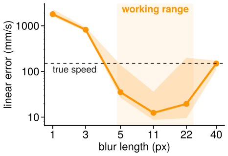
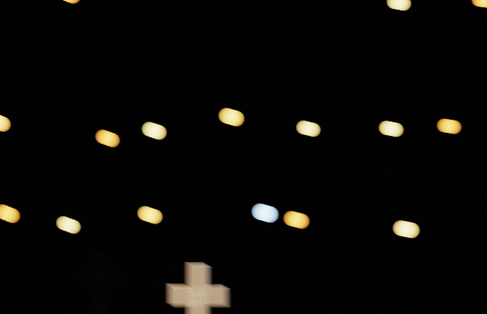
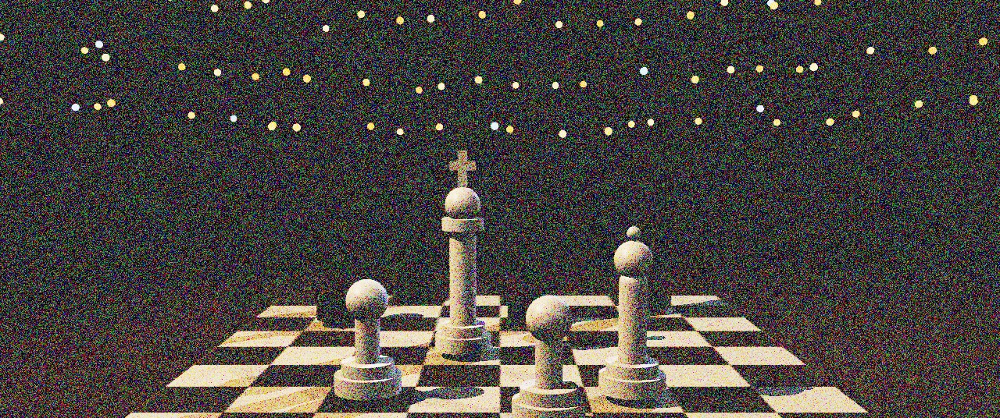

Computational imaging · CSC2529 · University of Toronto · 2026
One blurred photo is a speedometer.
Motion blur records how the camera moved. BlurTwist reads it back: all six numbers, from a single frame.
Motion blur records how the camera moved. BlurTwist reads it back: all six numbers, from a single frame.
Near things smear more than far ones when you slide. Everything smears alike when you pan.
It knows exactly how the camera moved, so the photo can be checked.


Sony a7R III on the Franka flange. Lens on the wrist axis.

The cepstrum of each patch peaks at its blur vector.
d = τ J(x, Z) ξ
Streak = shutter × geometry × motion.
A robust fit over the patches gives the motion.
72 photos. 12 motions, 6 shutter speeds.


Drag through six shutter speeds of the same move.

Drag the handles.
 blurred takefixed in post
blurred takefixed in postDeblurred with the motion read from the frame itself: +5.7 dB. With the robot's own record: +5.6 dB.


one frame9 frames, robot-alignedNine short frames merged by the robot's poses: +7.4 dB over one frame.
With a known sideways move, the length of each streak is its depth: median error per patch. For focus pulls and mattes.